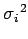

Inhalt Index DeskTop Bronstein

 Wahrscheinlichkeitsrechnung und Mathematische Statistik Theorie der Meßfehler Meßfehler und ihre Verteilung Fehlerrechnung für direkte Messungen ungleicher Genauigkeit
Wahrscheinlichkeitsrechnung und Mathematische Statistik Theorie der Meßfehler Meßfehler und ihre Verteilung Fehlerrechnung für direkte Messungen ungleicher Genauigkeit


Wenn die direkten Meßergebnisse xi aus verschiedenen Meßverfahren stammen oder Mittelwerte von Einzelmessungen darstellen, die zu dem gleichen Mittelwert  mit verschiedenen Streuungen gehören, setzt man an die Stelle des gleichgewogenen Mittels das gewogene Mittel
mit verschiedenen Streuungen gehören, setzt man an die Stelle des gleichgewogenen Mittels das gewogene Mittel
| (16.220) |
und an die Stelle der Streuungen  die Streuungsverhältnisse
| (16.221) |
Für steht ein beliebiger Wert (meist der mit dem geringsten Fehler), der aus dem Zahlenbereich der Meßwerte ausgewählt wird. Er dient als Standardabweichung der Gewichtseinheit, d.h., für ist . Aus (16.220) folgt: Das Gewicht einer Messung ist um so größer, je kleiner ihr Fehler ist.